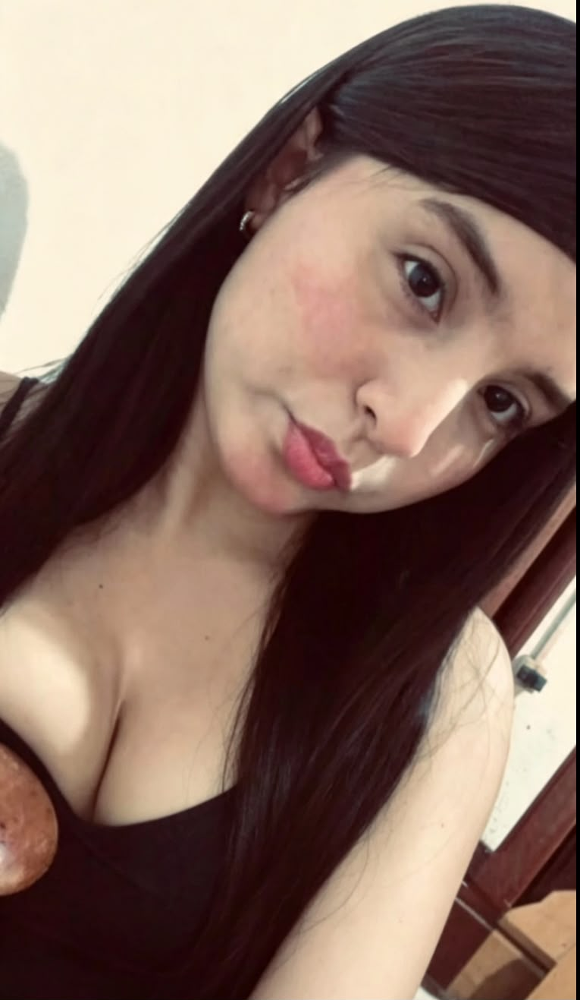
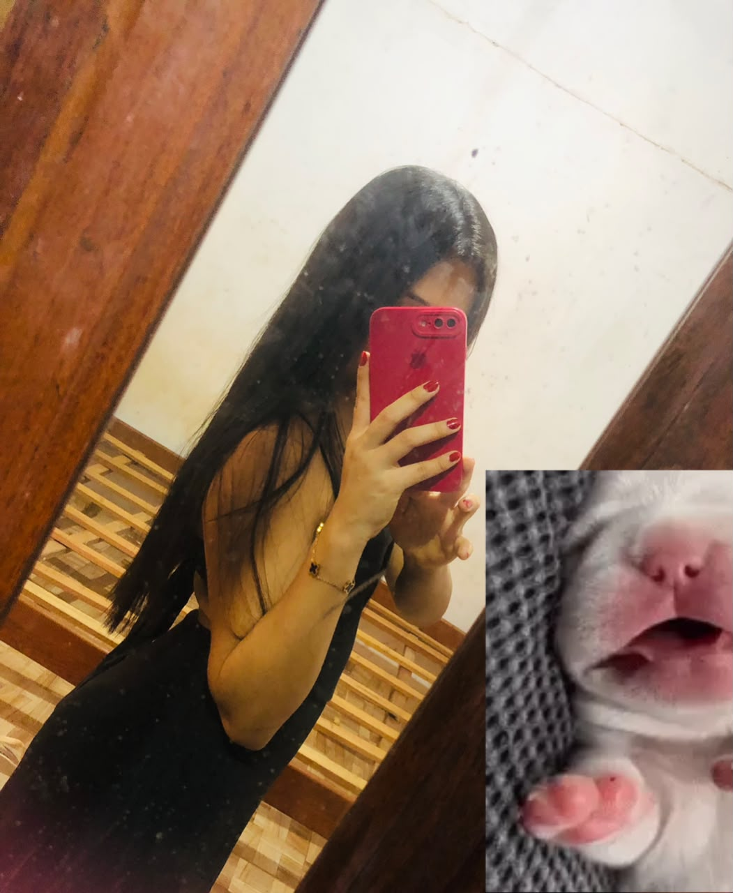

Em pouco tempo você conseguiu ocupar um espaço que eu nem sabia que estava vazio.
um cantinho só nosso
Matheus ♡ Beatriz
Tem coisas que chegam devagar. Você não. Você chegou e, em tão pouco tempo, virou uma das partes mais bonitas dos meus dias.
coloca o som e fica comigo por alguns minutos ♡
nossa música
Tocando no Spotify ♫
se o Spotify não iniciar sozinho, aperta o play aqui — celular costuma bloquear autoplay.
sobre você ter chegado tão rápido
Eu não estava preparado para gostar tanto de você.
Eu gosto da forma como nossas conversas deixam meu dia mais leve, mesmo quando é só uma besteira.
Eu gosto de você sem precisar inventar motivo bonito. Gosto porque é você.
alguns pedacinhos
Você em versões que eu já gosto de guardar.


“
eu queria conseguir te mostrar o jeito que eu te enxergo
em tão pouco tempo
Algumas coisas que já mudaram em mim.
Comecei a esperar suas mensagens.
Daquelas esperas bobas que deixam o celular mais interessante.
Comecei a reparar nos detalhes.
Seu jeito, suas expressões, as coisas que você fala sem perceber.
Comecei a imaginar mais “nós”.
Sem pressa, sem promessas gigantes — só com vontade de viver coisas boas ao seu lado.
pra você, Bia
Uma declaração que eu queria conseguir dizer olhando pra você.
Eu sei que parece cedo. E talvez seja mesmo.
Mas eu também sei que algumas pessoas não precisam de muito tempo para se tornarem importantes. Você foi assim comigo.
Em tão pouco tempo, eu comecei a gostar da sua presença, do seu jeito, das nossas conversas e até da saudade que aparece quando você some.
Eu não quero transformar isso em uma coisa pesada ou apressada. Quero só que você saiba que eu estou gostando de viver esse começo com você. E que, sem perceber, eu já me peguei sorrindo por sua causa mais vezes do que consigo contar.
Se eu pudesse resumir tudo em uma frase, seria: eu estou me apaixonando por você do jeito mais bonito — sem planejar.
— Matheus ♡
♡
Se esse começo já é assim, eu quero muito descobrir o resto.
Matheus + Beatriz